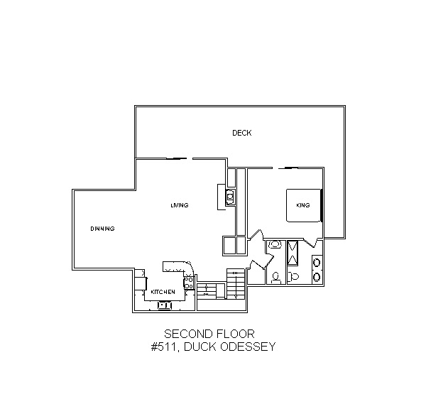
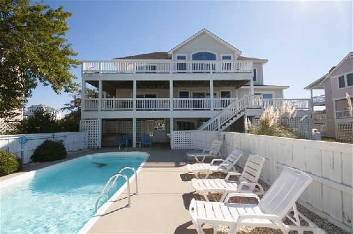
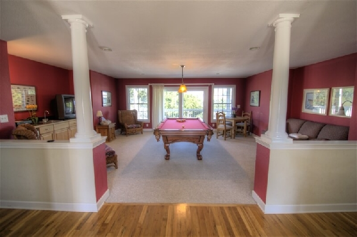
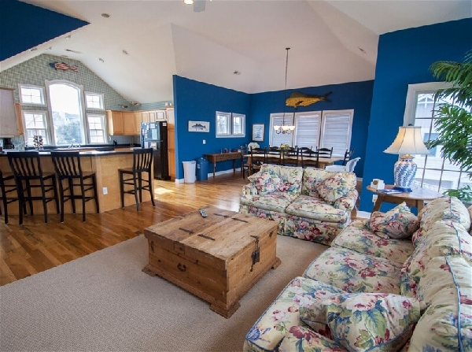
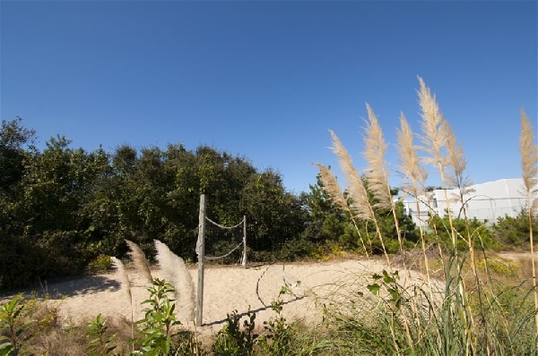
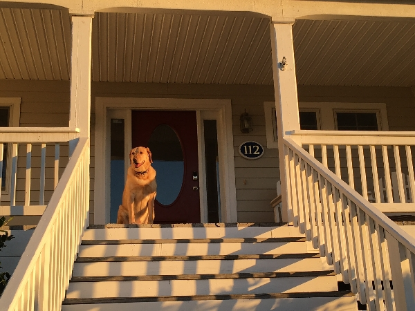

Welcome to Duck Odyssey!
We are located in the center of Duck, North Carolina.
Our six bedroom Outer Banks home is situated on a cul-de-sac on the ocean side of the town of Duck. The neighborhood is a mixture of mostly summer rental "cottages", non-rented vacation properties and a few year-around residents. It's central to everything in Duck; a short walk from the beach, restaurants, shopping, outdoor sports and the Duck boardwalk along the Currituck Sound.
Accommodations
-
Ground Floor
-
Small den with wet bar and sleep sofa and TV
-
Bedroom: queen bed
-
Full bathroom
-
Six parking spaces: two driveways, each can park three cars in-line
-
Outdoor basketball hoop
-
28x12 Pool (heated after outside temp generally rises above 60 F)
-
Hot Tub
-
Gas Grill
-
Outdoor Shower
-
Backyard Volleyball Court
-
Inside and outside (beach gear) owners closets
-
-
Mid-Level
-
Covered front porch
-
Entry foyer
-
Recreation room with pool table, card table, pop-a-shot, and 70" TV
-
Bedroom: king master suite with full private bath
-
Bedroom: queen master suite with full private bath
-
Bedroom: two twin beds
-
Bedroom: two twin bunk sets
-
Full hallway bathroom
-
Laundry facilities
-
Rear covered deck
-
Owner's closet for perishable supplies
-
-
Top-Level 
-
Open concept great room with:
- living room
- breakfast nook
- dining table
-
Modern, equipped kitchen
-
Half hallway bathroom
-
Sun deck (no cover)
-
Bedroom: king master suite with private bath
-
Home Description
Experience a sensational adventure in beach vacations when you reserve Duck Odyssey, a cheerful retreat with a dreamlike list of features. Enjoy private bedroom suites, gathering areas on every level and a host of outdoor amenities. Located in the popular subdivision of Duck Landing, guests can walk to the community center that offers an indoor heated pool, kiddie pool, tennis courts, fitness and game rooms and a private beach access. This central location allows for easy trips into the town center where you can enjoy fine dining, casual eateries, boutiques and an 11 -acre town park that hosts seasonal family friendly activities.
A den on the ground level provides a sleep sofa, flat screen TV and a wet bar with sink and a full refrigerator. The bedroom on this floor is furnished with a queen bed and TV. A full bathroom services those in this bedroom and the den.
Doors lead from the den to a sparkling private pool, where entire days can be spent poolside under the relaxing summer sun. A sandy volleyball court will call out to competitors in your group and provides hours of spirited activity. As the sun sets, grills are available to prepare casual outdoor meals, and a sheltered hot tub is the ideal retreat at the end of each day.

The middle level opens to a handsome recreation room with classic columns, a regulation size pool table, fully-reclining loveseat, arm chairs, card table and wet bar with sink and beverage center. Doors lead to the covered deck that overlooks the pool area. An array of charming sleeping accommodations make of the balance of this floor. Two suites include a king master with TV, direct deck access and a private bath and a queen master with TV, direct deck access and a private bath. Two children's bedrooms are available, one furnished with two twin beds and the second with two twin bunk sets, and both have access to a full hallway bathroom. Laundry facilities are centrally located.

Expansive ceiling, glistening hardwoods and a vibrant nautical theme greet you in the top level great room. Configurable sofas and a reclining arm chair are situated around a flat screen TV and seasonal gas fireplace set to a backdrop of deep blue walls bathed in natural light. A half bath is centrally located and doors lead to the furnished sun decks to enjoy refreshing coastal breezes. The modern kitchen is well equipped for enjoyable meal preparations and offers chefs abundant countertops and storage, a full refrigerator, ice maker, range/stove, microwave and dishwasher. Meals can be served at the kitchen bar with seating for four or at the dining table that seats ten guests. This level is completed with a stylish king master suite with TV, sun deck access and a private bathroom.

Amenities
-
24-hour arrival: keyless entry
-
Air conditioning: two zone central HVAC
-
Big-brother: Google Home voice-controlled devices: say “Hey Google” to activate
-
Cable TV: 6 TVs, 2 DVD Players, CD Player
-
Essentials: bed sheets, towels, soap, toilet paper … and whatever you leave behind for others!
-
Gym: at clubhouse at end of cul-de-sac
-
Hair dryer
-
Hangers
-
High chair, crib
-
Home automation: doorbell, Nest cameras (used when the house is vacant), thermostats, smoke and moisture detectors
-
Indoor gas fireplace
-
Internet access: reachable through three zone Google Wifi
-
Kitchen: equipped with pots/pans, bakeware, dishes, glasses and cups, utensils
-
Owner perks: access to beach chairs, umbrellas and toys, fishing rods ...
-
Pets allowed
-
Washer/Dryer
On departing, there is no need to strip the beds. Nor should you make the beds, so that the housekeeper can quickly tell which ones were slept in. The used white towels should be placed in a little pile in each corresponding bathroom.
Reservation Practices
Turnover Day is SUNDAY, given that Saturday is even more horrible in terms of weekend ingress/egress to the Outer Banks. Check-in anytime after 4pm, Sunday. Check-out is 10am, Sunday. This gives time for maintenance services to visit the house, but let us know if you plan to arrive earlier or depart later. For visits of more than than seven days, please let us know and we will make every effort to accommodate your wishes.
Starting in 2017 we have taken this house off the rental market, and are making it available to family at no charge beyond the housekeeping fee of $350 for cleaning and fresh linens.
House Rules
We hope that our guests enjoy the house during their stay as much as we do. In order to keep the house in excellent condition for all guests, we ask that you abide by guidelines.
-
No smoking.
-
Please keep the property and all furnishings in good order, cleaning up before you leave. Let us know when anything breaks, rather than leaving it broken for the next guest.
-
Please use the outdoor shower downstairs to rinse off sand from feet and bathing suit from the beach prior to entering the house. Rinsing sand in the bathroom showers will clog the drains.
-
Please only flush toilet paper down the toilet. We are on a septic system and anything else put in the toilet will clog up the system.
-
Trash is picked up early on Mondays and Fridays (recycling on Mondays only) so we ask that you take the canisters to the curb the night before. Please bring them back under the porch in the morning.
-
Housekeeping: There is no daily housekeeping service. Fresh linens and bath towels are included in the cleaning fee, but daily maid service is not provided. Remember to bring beach towels.
-
The guest reserving the house must be 26 years of age or older. While great wisdom may be learned through experience, this house isn’t the place to acquire expensive, life-limiting lessons in wisdom.
-
In case the above-point wasn’t clear, parties/events with guests not staying at the home are not allowed. Duck Odyssey is intended for families. We want to be respectful of our neighbors, some of whom help watch the house in our absence.
-
Grilling: Guests have use of the gas grill which is placed on a grill mat on the mid-level deck. Because it's on the deck, attention is required while it is lit. Please turn off the propane tank when you are done cooking. If guests bring charcoal grills, they must be used on the driveway or backyard sand near the small wooden table to minimize the risk of a building fire.

Pet Rules
We love taking our [oversized, shedding] dog with us on vacation! Perhaps you share this lifestyle choice? If so, we ask that guests comply the following so that we all can sustain this practice.
-
Please notify us in advance if you plan to bring a pet, so that we can arrange for extra cleaning upon your departure. Pro tip: Nine dogs would be too many.
-
There may be additional cleaning fees of about $175. Some folks have allergic reactions to pet hair.
-
All pets must comply with the following specifications:
-
Must be at least two years of age or older.
-
Must be up-to-date on rabies vaccinations and all other vaccinations. Heartworm preventive is highly recommended.
-
-
Guest is responsible for cleaning up any/all pet refuse.
-
Pets are not allowed on furniture at any time including bedspreads. Please close all doors to bedrooms when leaving the house to prevent pets from getting on the beds.
-
We ask that all pets are to be treated with a topical flea and tick repellent three days prior to arrival.
-
Bathing of pets inside the home is not a good idea; remember that we have an outside shower.
-
Pet must not cause damage to premises or furnishings.
-
Pet will not be left unattended for an undue length of time, either indoors or out. Further, pet will not be left unattended on balcony, patio, or porch. (Though Buka somehow is unattended on the front porch in the photo below!)
-
Pets are not supposed to go on the pool deck … and by extension, aren’t to go in the pool.
